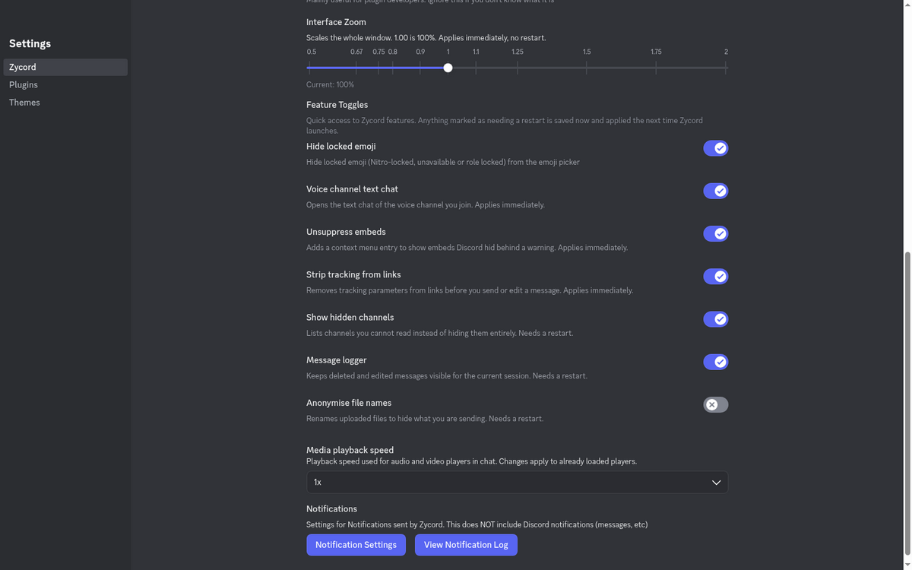
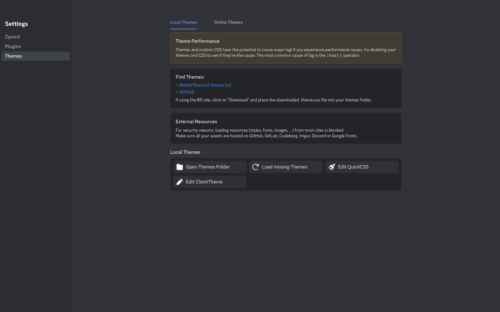

Features
Every entry below is in build 1.0.0. Screenshots are captures of the running client, not mockups.
Plugins, 108 on out of 175
The client registers 175 plugins and starts 108 of them the first time it runs. Each plugin has its own switch and its own settings section. The Plugins tab lists all of them and shows which are running.

Interface zoom, 50 to 200 percent
A slider in the Zycord tab scales the whole window between 0.5 and 2.0. The window keeps its size; the content inside it scales. The value is stored on the Zycord Desktop plugin, so the slider here and the plugin setting read from the same place. It applies without a restart.

Feature Toggles panel
One panel collects seven switches for features that are otherwise reached through plugin settings: hide locked emoji, voice channel text chat, unsuppress embeds, strip tracking from links, show hidden channels, message logger, and anonymise file names. Each switch writes the plugin's own stored setting. Switches that need a restart say so in their description.

System tray with hide to tray
Closing the window hides it and keeps the client running behind a tray icon. The tray menu has entries to open the window, hide it again, mute notifications, and quit. The close-to-tray behaviour only applies while the tray icon exists, so quitting from the tray menu does close the app.
Message logging
The message logger keeps a record of messages you have seen, held in the client's own data folder on your machine. Deleted and edited messages stay readable for the current session. Nothing is uploaded.
Role and permission viewers
A permissions viewer breaks down what a member can and cannot do in a channel, showing which role grants or denies each permission. A role viewer exposes the role list and its members from the same context menus.
Profile theming
Profile theming applies colour and decoration to profile cards, and the client reads the theme attributes needed for those to render. It can also be turned off, which leaves profiles in Discord's default styling.
Discord analytics blocked by default
The analytics block is on when the client first runs. It stops Discord's tracking events from being sent. Badge progress events are a separate switch and stay on by default; both are restart-needed settings.
Theme engine with QuickCSS
The theme engine loads CSS themes from the client's theme folder and applies the ones you enable. QuickCSS is a second channel for your own rules: a file the client watches and re-applies as you save, so changes land without restarting.

Screen sharing with a capture handler
The client installs a display media request handler in the main process. When Discord asks to capture a screen or window, the handler answers with a source instead of falling through to an empty stream. Audio capture is wired for system audio on Windows only.
Voice channel text chat
Joining a voice channel opens that channel's text chat alongside it, so the messages are reachable without leaving the call. This is one of the switches in the Feature Toggles panel, and it applies immediately.